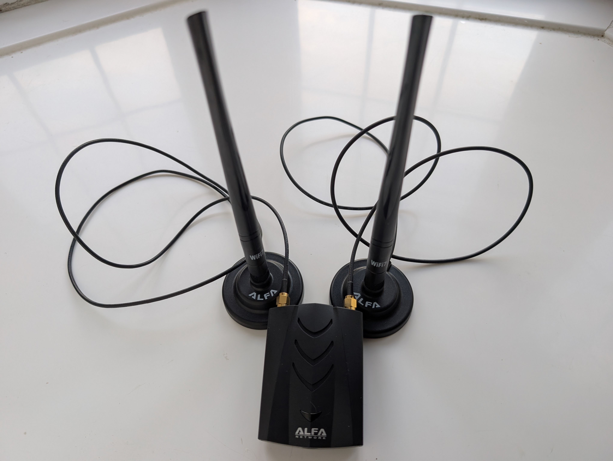

Navigation
Site last updated: |
WardrivingMy wardriving setup and discovered networksI have discovered this many new networks on WiGLE:
I started wardriving on February 7th, 2026 and these are what I have found every month (if I remember to update it):
 Also i have a g mouse usb gps dongle that has a magnet so i can stick it to the roof as well i only use that when in the car because i got a wwan card for my laptop that has gps. It is easier because there is no wires sticking out and i think it gets a better signal than the g mouse I will update this page with all my new discoveries every month if i remember to hopefullyTotals: |

Visitor Count: -7 :(
This page is best viewed with